|  |
| LAST UPDATED: 2012-05-21 |
| • Backstory Combine forces have secured the area around a harbor in the industrial sector of City 17 (a harbor that they've recently repurposed into a top secret research facility) and, according to Resistance spies, a dangerous superweapon is being developed inside. In order to prevent the weapon from being brought online, a rebel task force is being sent to storm the enemy base. Unfortunately, the location is well-defended with large walls erected around the harbor, booby-trapped streets and heavy infantry patrols. The task force will have to make its way to the harbor (potentially destroying Combine deployment centers along the way), open the main gate and shut down the generators to allow the Resistance to take control of the facility. |
| • Notes Created by: Coppermantis (sugaredcube@gmail.com) Teamwork is crucial in this level. Also, watch your step! |